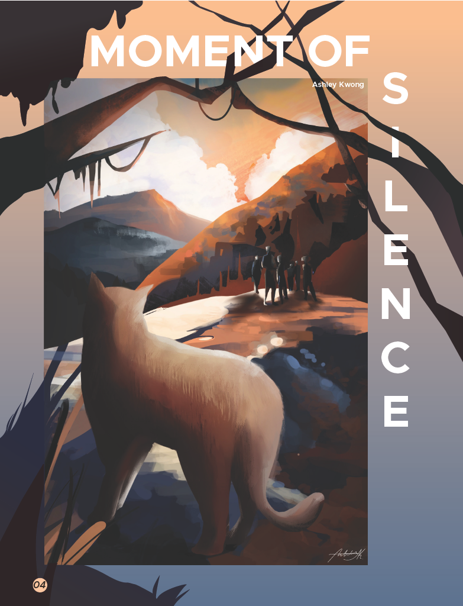
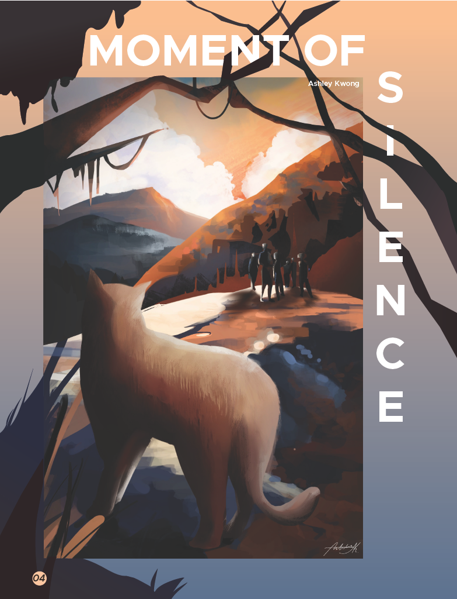
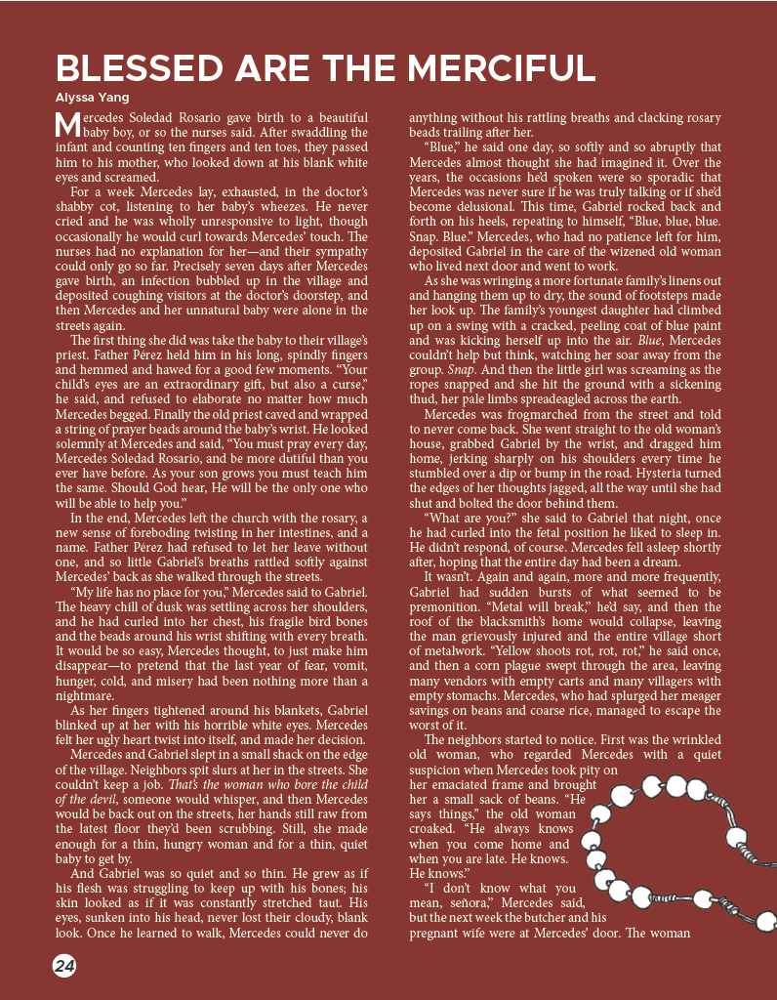
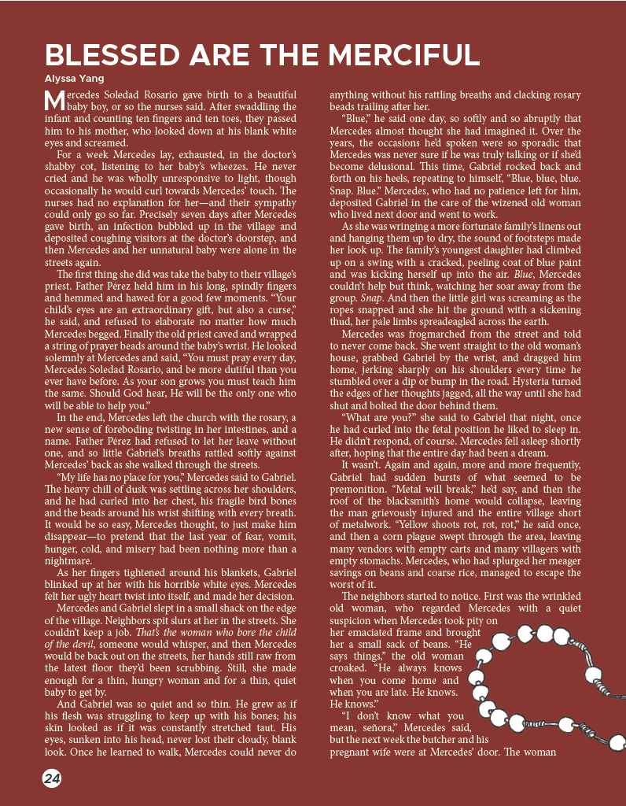
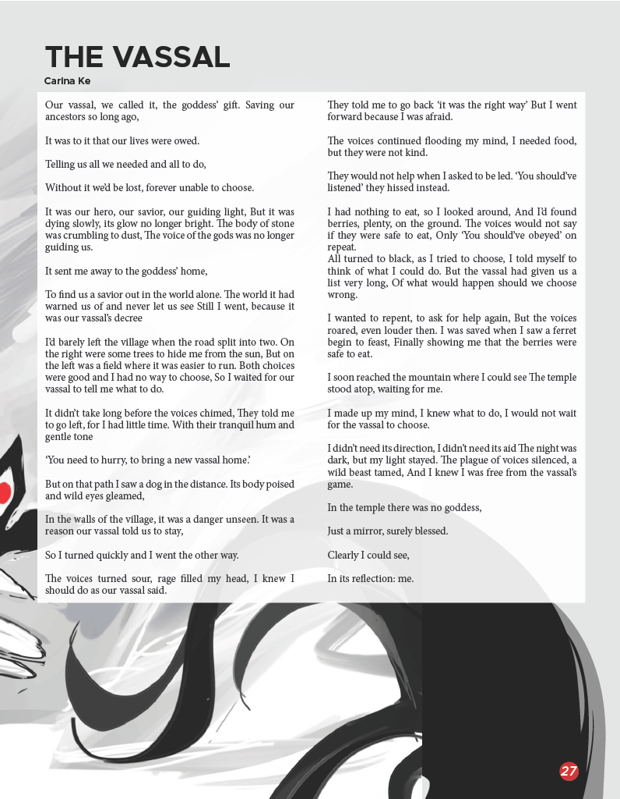
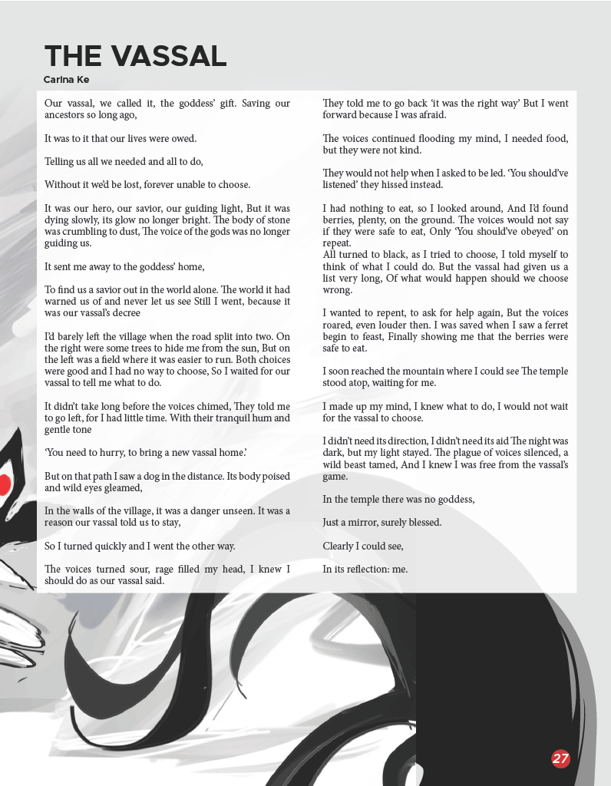

Letter from the Editors
January is the month of new beginnings, of yearly resolutions, of bright-eyed wonder. Although the sun rises and sets like any other day, as the clock strikes midnight and we find ourselves in a new year, we cannot help but hope for good things in our futures: boba with friends, celebrations with family, and achieving our goals.
The road ahead is unclear. None of us know what the future will bring, but all of us stand at crucial turning points in our lives. For seniors, our paths are unclear, and we teeter on the edge of the hazy unknown. We will make one of the most important choices of our lives this year. Juniors bite their nails as they begin to turn their attention to the monster of college applications, a thousand tiny decisions in front of them. Sophomores, settling into the groove of their second year, face different but no less challenging choices. Which classes will they take next year? Will they branch out to different clubs? And freshmen, entering high school with wondrous eyes, have a myriad of pathways before them. The next few years of their lives will be spent here, trying new things and meeting new people. Regardless of our grade level, however, the new year brings with it new decisions to make.
Our choices define us. They shape our lives. Perhaps if we chose this, we would be happier. Or perhaps if we chose that, our lives would be filled with sadness. But choices are just that—choices, neither inherently good nor bad. In Volume 03: Quatervois, we reject a harsh separation between light and dark. We visit clown conventions and enter melancholy subway stations. We stroll on ocean cliffsides and peek into dance studios. But no matter where we go, all of us stand at a crossroads. And regardless of how difficult our decisions are, we move forward. Grasping both joy and sorrow in hand, we welcome the new year and everything that it entails.
Gallery
 



 


 
